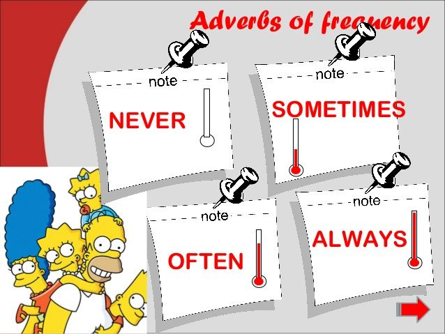
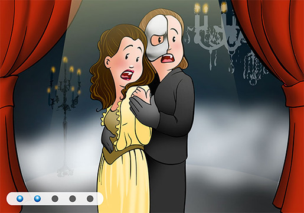
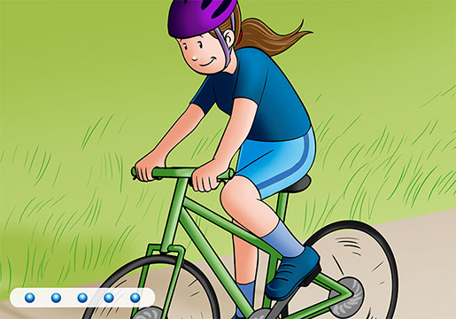

| ADVERBS OF FREQUENCY | ||
English Adverbs that change or qualify the meaning of a sentence |
 | Español Los adverbios que cambian o califican el significado de una oración |
Sujeto + frequency adverb + verbo principal + (complemento) |
PRAYERS IN AFFIRMATIVE |
||
We sometimes go to the theatre. |
I always go cycling on Sundays. |
|
|  |  | |
(nosotros) A veces vamos al teatro. |
(yo) Siempre voy en bici los domingos. |
|
Sujeto + don't/doesn't + frequency adverb + verbo principal + (complemento)
|
||
I don't often watch TV. |
He doesn't usually go shopping. |
|
No veo la televisión a menudo. |
Normalmente no va de compras. |
|